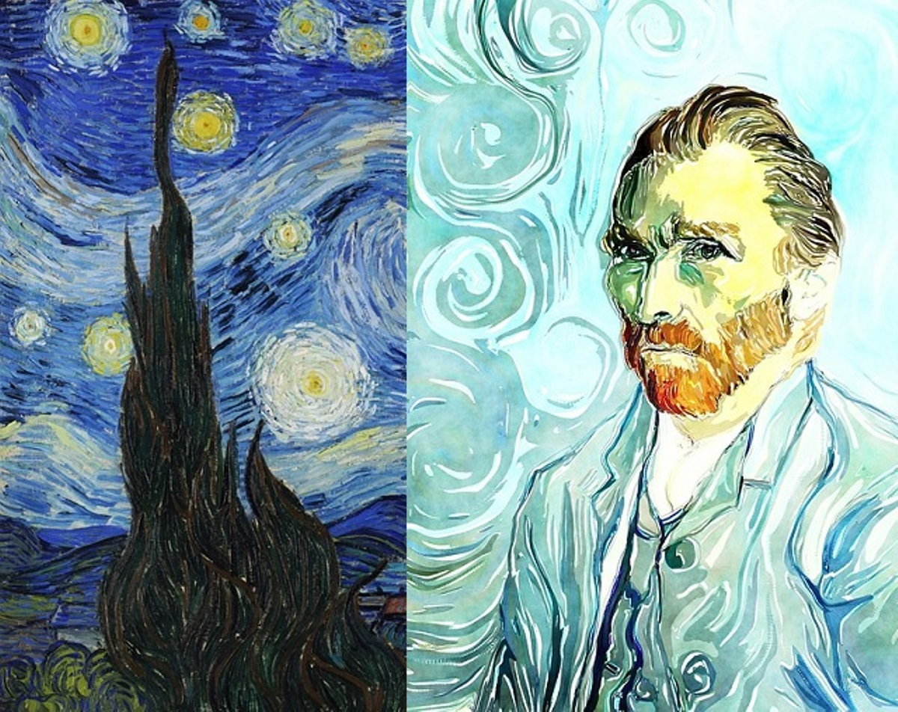

Sólo dos pinturas de Van Gogh se venden por Vincent van Gogh. Después de su muerte, Vincent dejó
su obra completa a su hermano menor, Theo van Gogh. A la muerte de Theo la colección pasó a manos
de su viuda, Jo Van Gogh-Bonger. Ella vendió una serie de obras, pero mantiene una colección que es
representativa de la obra de Van Gogh. Después de su muerte en 1925, las obras de arte llegaron a manos
de su hijo Vincent Willem Van Gogh.
En 1960, fundó la Fundación Vincent van Gogh. Además de él y su esposa, sus tres hijos que viven también tenían
un asiento en la fundación, así como un representante del gobierno holandés.
El 21 de julio 1962 fue firmado un acuerdo entre el Estado de los Países Bajos y la Fundación Vincent van Gogh.
La familia Van Gogh contribuyó toda la colección, que consta de 200 pinturas de Vincent van Gogh y Paul Gauguin
, 400 dibujos, y todas las cartas de Vincent, al estado de 15 millones de florines. La condición más importante
es que toda la colección se encuentra en un museo dedicado a Van Gogh. Esto sentó las bases para el Museo Van Gogh.
El museo abrió sus puertas en 1973 con Emile Meijer como su primer director. En el momento en que era un museo
nacional, hoy en día el museo es una fundación independiente y las pinturas son parte de la colección nacional.
La colección fue heredado por su hijo Vincent Willem Van Gogh en 1925, con el tiempo prestado al Stedelijk Museum
de Amsterdam, donde se mostrará durante muchos años, y fue transferido a la Fundación iniciado por el estado de
Vincent van Gogh en 1962